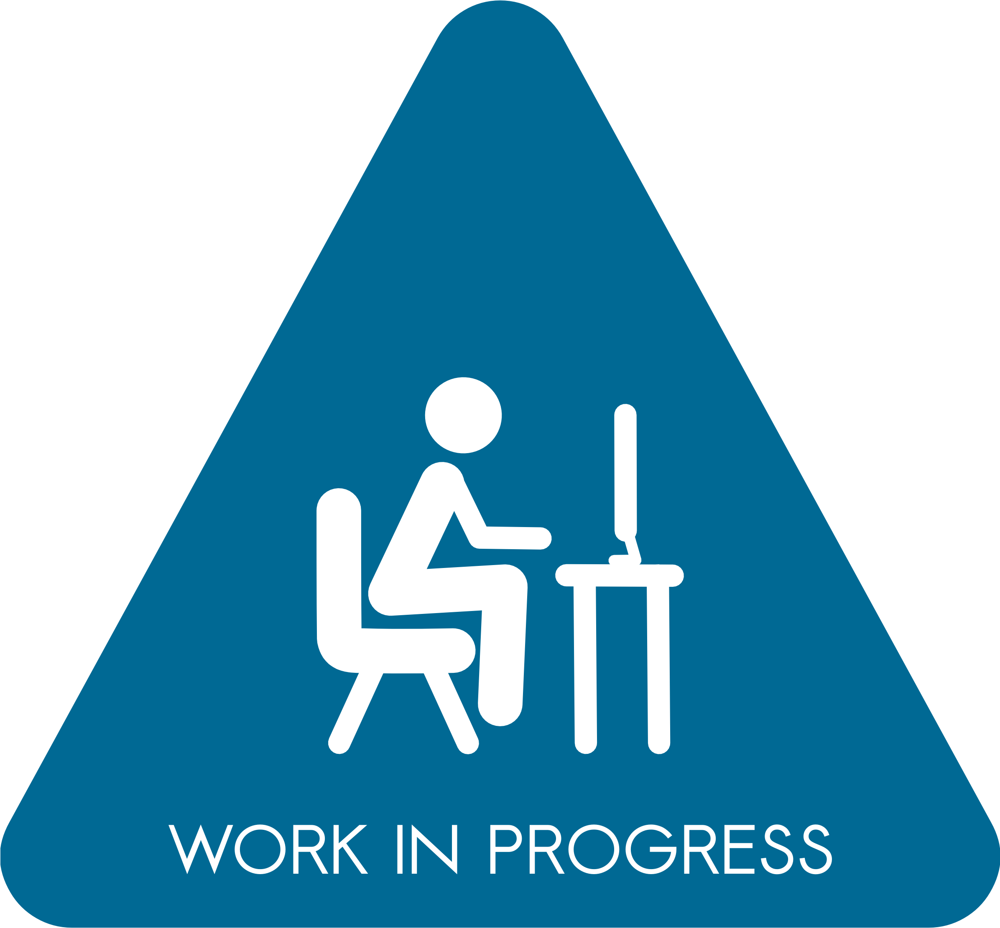

Hi i'm Lorenzo
and i'm studying to become a Fullstack developer.
These are my projects, or at least this is what i would say if i had any. For now the only real project i have is this site, which i hope to evolve as i become a better developer
- 
Lorenzo Loi
These are my projects, or at least this is what i would say if i had any. For now the only real project i have is this site, which i hope to evolve as i become a better developer

My name is Lorenzo Loi, i was born in Cagliari, Sardinia the 18th of January 2000.
At the age of 12 my interest for videogames brought me closer to the world of Information Technology,
so when it was time to choose in which high school to enter, i choose the
"Instituto di istruzione superiore Michele Giua",
where i studied to obtain the Secondary School Diploma in IT.
After i diplomated from high school i decided to approch the online school Start2Impact to become a Fullstack developer.